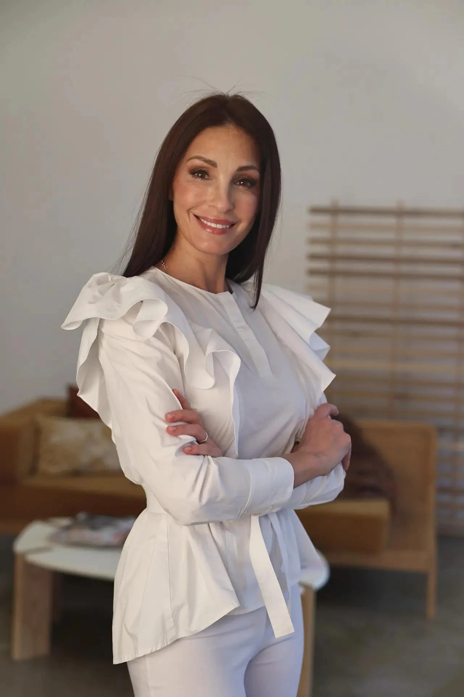

Внимание к человеку
В основе общения — уважение к вашим вопросам, обстоятельствам и предпочтениям.
Личность врача и его подход к работе важны так же, как профессиональные знания.

Специальность · сведения заполняются
Здесь расскажите о враче: где он учился, какие направления выбрал и как строит общение с пациентами. Добавьте подтверждённые сведения о квалификации и опыте.
Образование — добавьте учебное заведение
Квалификация — добавьте сведения
Направления работы — укажите специальности
В основе общения — уважение к вашим вопросам, обстоятельствам и предпочтениям.
Рекомендации важно обсуждать простым языком, объясняя цель каждого следующего шага.
План наблюдения строится с учётом медицинской ситуации и ваших приоритетов.
Если в практике несколько специалистов, добавьте здесь их фотографии, имена, специальности и отдельные описания.
Расскажите, какой вопрос вы хотите обсудить с врачом.